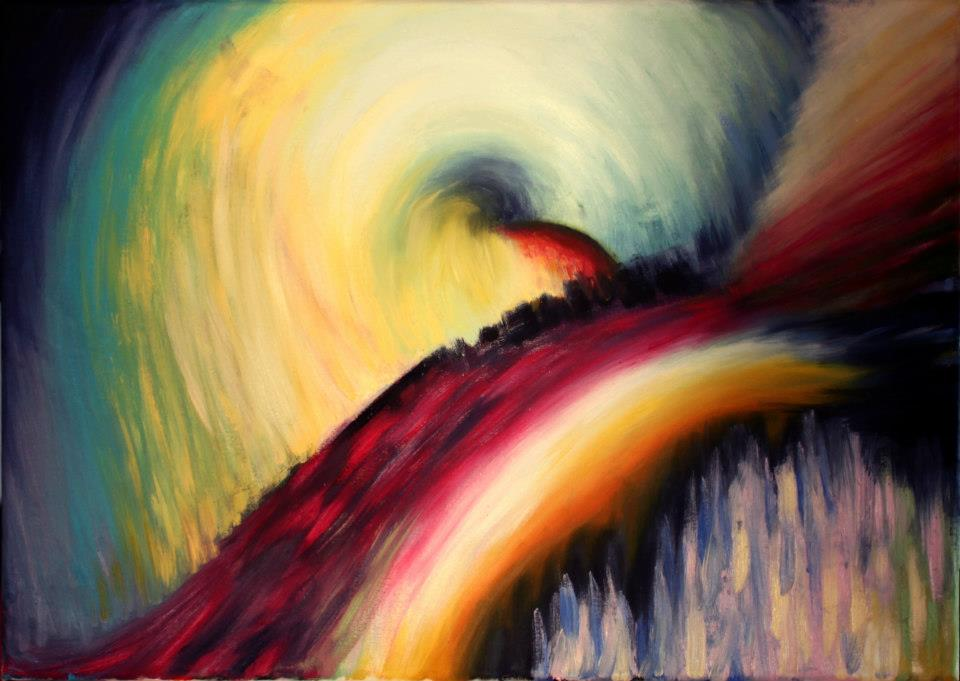
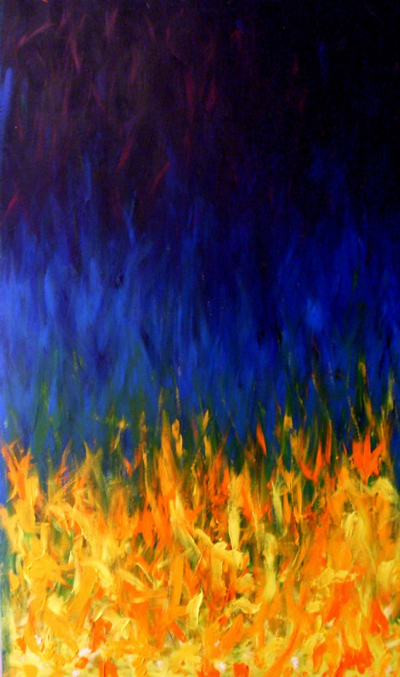
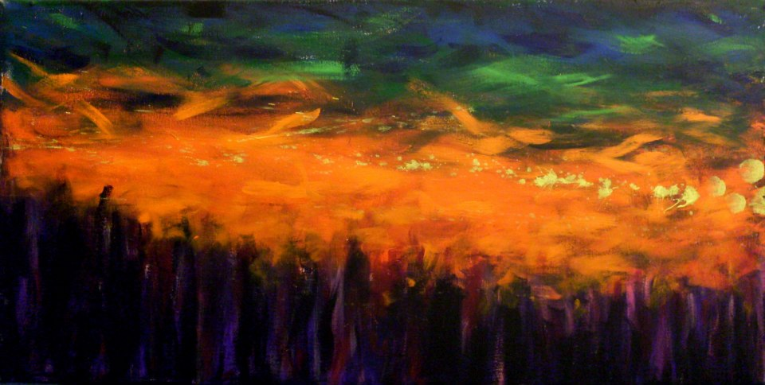
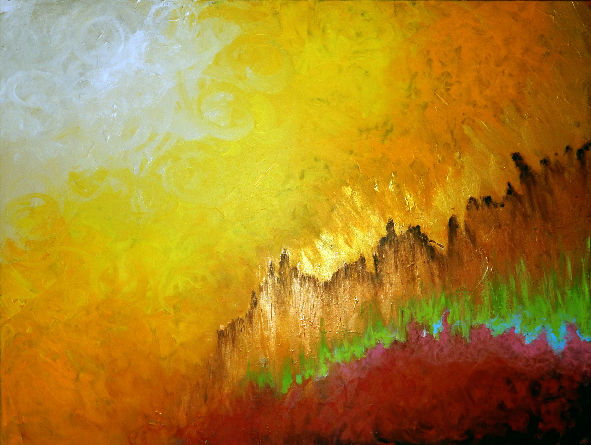
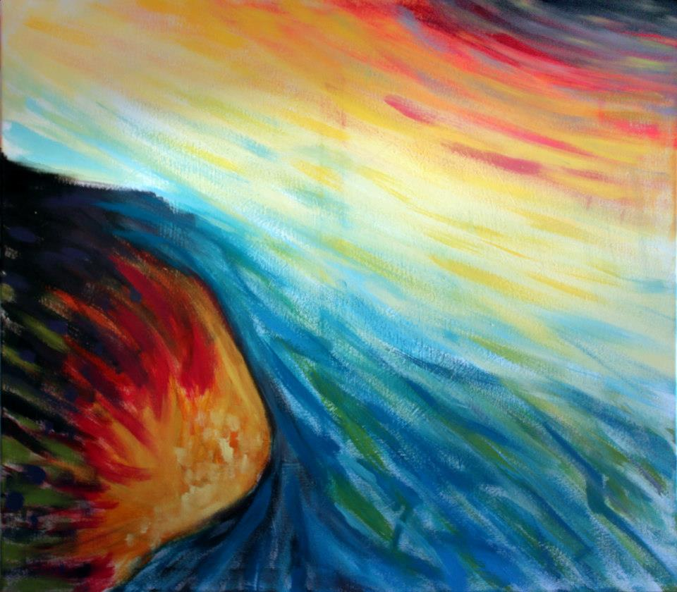

Trance instintivo
2010-2013
“La libertad está en darse la posibilidad de intentarla.”
La interpretación de direcciones y colores producto de una voluntad inconsciente deja de manifiesto la intuición como vehículo para la producción de paisajes emocionales, de momentos reflejados en pinceladas.
Esta serie de intentos resultó en el registro de una profunda experimentación emocional llamada “TRANCE INSTINTIVO”, la cual fue expuesta en el mes de Diciembre ¿¿año??? en el Centro Cultural Sábato.




